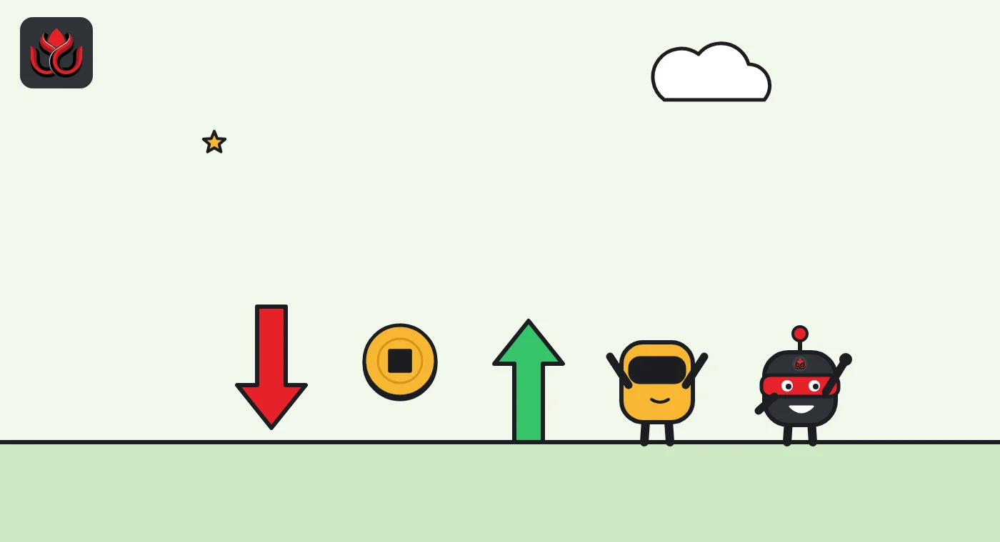
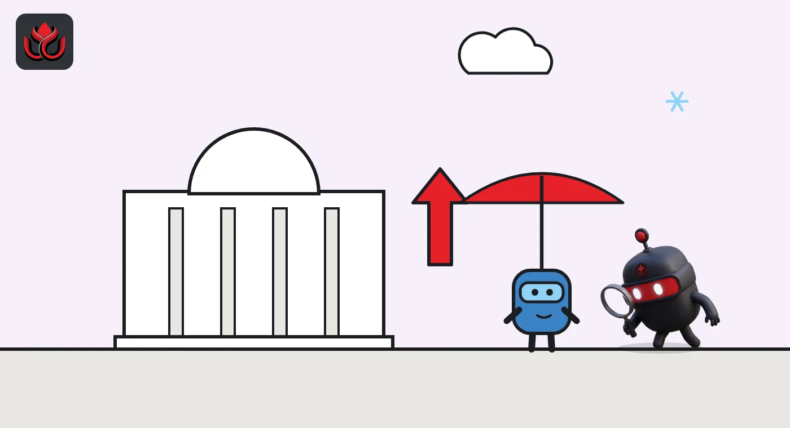

Inflation stuck at 3.4% in August. Bitcoin jumped 2.8% in two hours, then faded
Gasoline drove US prices up in August while core inflation cooled on the year. Bitcoin hit about $79,160 within two hours of the September 11 report and ether gained almost 7%, but both gave most of it back later in the day.
Key points
- US prices rose 0.4% in August and 3.4% on the year, and gasoline alone made up more than a third of the monthly rise.
- Core inflation, which leaves out food and energy, slowed to 2.4% a year from 2.5%.
- Bitcoin went from about $77,000 to about $79,160 in two hours after the release, then fell back near $77,280 by 4:00 p.m. ET.
What the report showed
US consumer prices rose 0.4% in August and 3.4% from a year earlier, the Bureau of Labor Statistics (BLS) said on September 11, 2026, at 8:30 a.m. ET, with gasoline behind more than a third of the monthly rise. Bitcoin climbed about 2.8% in the next two hours, then gave most of it back later in the day. The consumer price index (CPI) tracks what households pay for a basket of goods and services, and crypto traders follow it because it shapes what the Federal Reserve does with interest rates.
The monthly figure, after seasonal adjustment, was up from 0.1% in July, the BLS said. The annual rate was unchanged from July. Core CPI, which leaves out food and energy because they swing a lot, rose 0.3% in the month after 0.2% in July. Over 12 months, core prices rose 2.4%, a little slower than the 2.5% pace recorded for July.
Gasoline was the main driver. The gasoline index rose 3.9% in August and, according to the BLS, accounted for more than a third of the monthly increase in all items. Energy as a whole rose 2.1% in the month and was 16.3% higher than a year earlier.
How crypto moved
Hourly prices from CoinGecko show bitcoin trading at about $76,996 at 8:00 a.m. ET, half an hour before the release. At 9:00 a.m. ET it was near $77,961, and at 10:00 a.m. ET it reached about $79,157. That is a gain of roughly 2.8% in two hours.
The move did not hold. Bitcoin was at about $78,784 at 11:00 a.m. ET and slid through the afternoon to roughly $77,282 at 4:00 p.m. ET. On CoinGecko's daily series, bitcoin started September 11 near $76,555 and started September 12 near $77,204, so the net change over the day was small.
Ether moved more. CoinGecko data put it at about $2,457 at 8:00 a.m. ET and about $2,627 at 10:00 a.m. ET, a rise of close to 7%. By 4:00 p.m. ET it had eased to around $2,538.
Spot bitcoin exchange-traded funds (ETFs) were quiet. US spot bitcoin ETFs had a net outflow of $13.2 million on September 11, after $282.7 million left the funds on September 10, according to Farside Investors data.

Where prices rose and fell
The breakdown shows a split picture. Energy and gasoline pushed the index up, while food, medical care and car insurance were soft.
US CPI, August 2026, monthly change
% month over month
Source: US Bureau of Labor Statistics, CPI release for August 2026 (September 11, 2026)
Why core inflation looked calmer
Beneath the headline, several parts of the report were calm. Food prices rose just 0.1% in August, and food at home was flat. Shelter, the largest piece of the index, rose 0.3% after 0.1% in July. The medical care index fell 0.2%, and motor vehicle insurance fell 0.8%, BLS figures show.
Some service prices did jump. Airline fares rose 2.7% in the month and were 23.4% higher than a year earlier. Communication rose 2.3%, and lodging away from home rose 2.4% after falling in July.
The gap between the headline and core annual rates tells the story. Headline inflation was 3.4%, but core was 2.4%. Most of the difference came from energy, with gasoline prices up 27.4% over 12 months. That makes the inflation picture very sensitive to oil.
Goods outside food and energy were mixed. Used cars and trucks rose 0.4% in August and new vehicles 0.3%, while apparel was flat. Over 12 months, food prices rose 2.7% and shelter 3.0%. The CPI for urban wage earners, a related index used for some benefit adjustments, rose 3.5% over the year.

What happened after
Five days later, on September 16, the Federal Reserve raised its target range by a quarter point to 3.75% to 4%. The vote was 12 to 0. Its statement said the move would "support a timelier return to the Committee's 2 percent goal."
The calm in the August data did not last. The September CPI, published on October 14, showed prices up 0.6% in the month and 3.7% over the year, the BLS said. Gasoline rose 9.1% in September alone and accounted for more than half of the monthly increase. Core inflation rose to 2.6% on the year.
For crypto traders, the September 11 session was a reminder that the first move after a data release is often not the last.
Timeline
Bitcoin near $76,996 and ether near $2,457, per CoinGecko
August CPI: 0.4% monthly, 3.4% annual, core 0.3% monthly
Bitcoin near $79,157 and ether near $2,627
Bitcoin back near $77,282
Fed raises rates by 0.25 percentage points to 3.75% to 4%
September CPI shows 3.7% annual inflation
LC Insight analysis
This section is our reading of the facts above, not a statement of fact.
- We think traders bought the details, not the headline. Soft food prices, steady shelter and a slower core rate gave them a reason to step in once the first number sank in.
- Energy is the weak spot. If fuel keeps rising, the Fed has less room to pause, and crypto would likely feel it through higher real yields. September's 3.7% reading showed how fast that can happen.
- Ether beating bitcoin for a few hours showed some appetite for risk. But one session is not a trend, and both coins ended the day near where they started.
What's next
- Monthly CPI releases, especially gasoline's share of the increase
- Oil and gasoline prices as the main inflation driver
- Daily spot bitcoin ETF flows around data releases
- Fed statements on the path of rates
Disclaimer. This article is based on public information and the sources listed below as of the update time shown. It is for information only and is not investment, legal or tax advice. Figures may change as companies and authorities publish new data.
Sources
- US Bureau of Labor Statistics, CPI news release for August 2026 (September 11, 2026)
- US Bureau of Labor Statistics, CPI news release for September 2026 (October 14, 2026)
- Federal Reserve, FOMC statement (September 16, 2026)
- CoinGecko, Bitcoin price data (hourly, September 11, 2026)
- CoinGecko, Ethereum price data (hourly, September 11, 2026)
- Farside Investors, Bitcoin ETF flow data